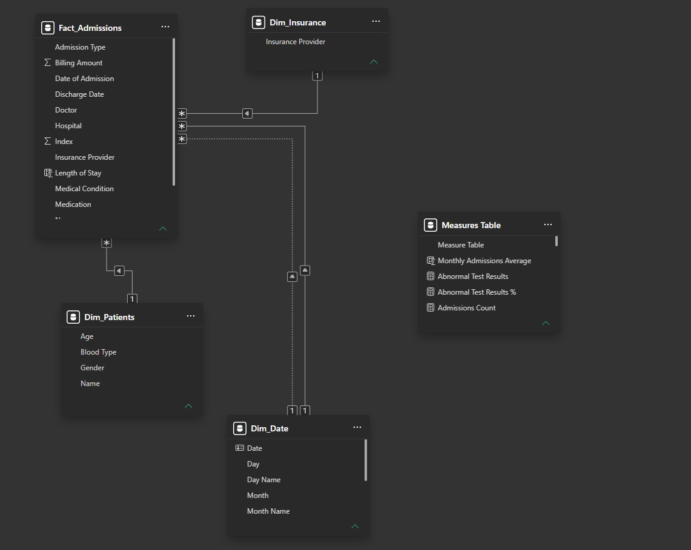
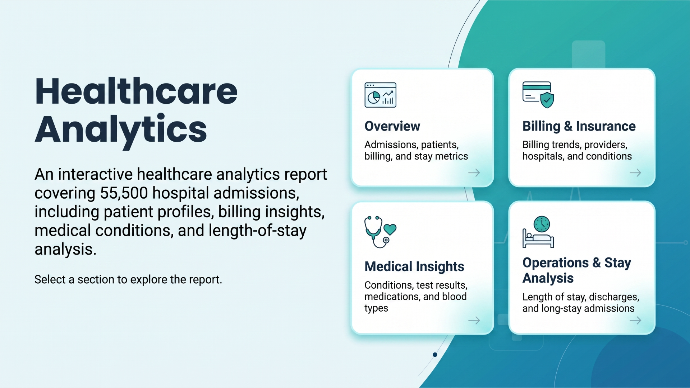
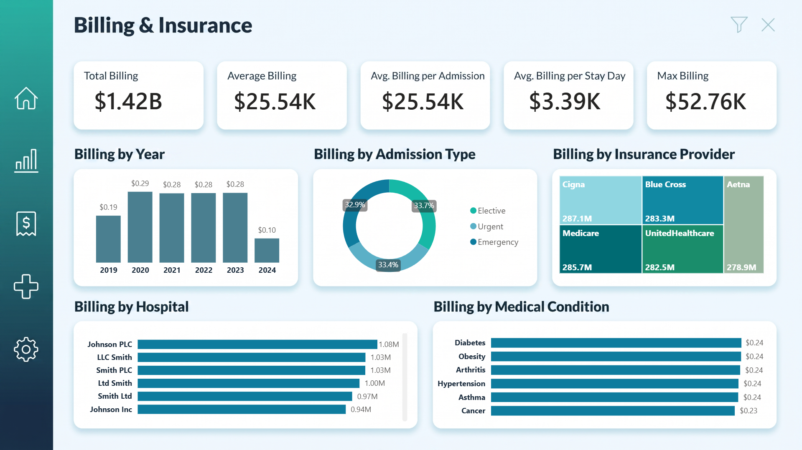
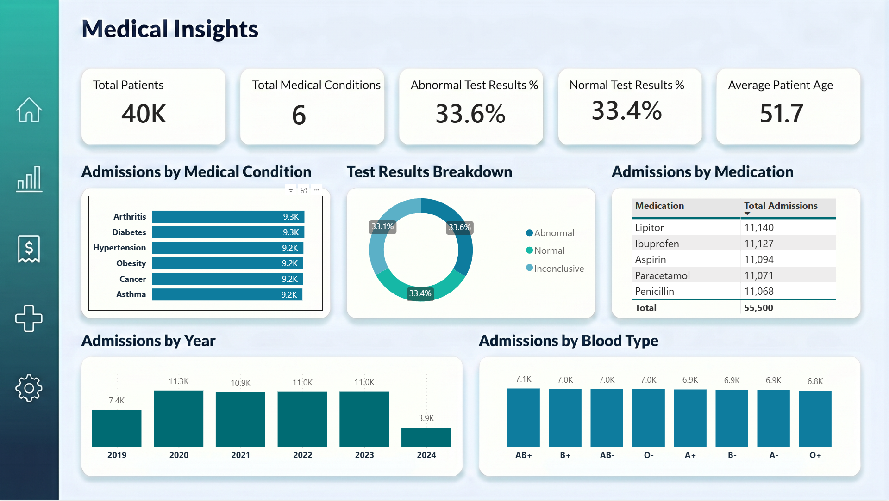
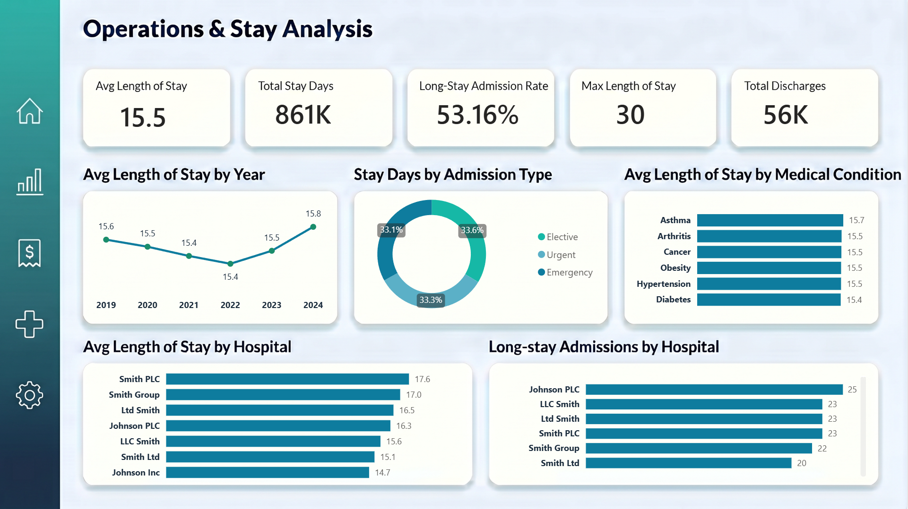

Problem biznesowy
Sieć placówek medycznych potrzebowała jednego narzędzia, które odpowie na kluczowe pytania zarządcze: ilu mamy pacjentów i z czym trafiają, ile kosztuje leczenie i jak rozkłada się między ubezpieczycieli, jak wyglądają dane kliniczne (badania, leki) oraz jak efektywnie wykorzystywane są łóżka (długość pobytu, przyjęcia, wypisy). Rozproszone dane utrudniały szybkie decyzje, dlatego celem było połączenie ich w jeden interaktywny raport wspierający decyzje operacyjne i finansowe.
Dane i narzędzia
- Skala: 55 500 przyjęć, 40 tys. pacjentów, lata 2019 do 2024.
- Zakres danych: wiek, płeć, grupa krwi, schorzenie, typ przyjęcia, szpital, ubezpieczyciel, koszt leczenia, lek, wynik badania, daty przyjęcia i wypisu, długość pobytu.
- Narzędzia: Power BI Desktop, język DAX. Dane demonstracyjne (nie zawierają realnych danych pacjentów).
Model danych
Dane ułożyłam w schemat gwiazdy: centralna tabela faktów Fact_Admissions (przyjęcia) połączona relacjami jeden do wielu z wymiarami:
- Dim_Patients (wiek, płeć, grupa krwi),
- Dim_Insurance (ubezpieczyciel),
- Dim_Date (kalendarz), użyty dla daty przyjęcia i daty wypisu, czyli wymiar pełniący dwie role (relacja aktywna i nieaktywna).
Miary trzymam w osobnej tabeli miar (Measures Table), żeby zachować porządek w modelu. Taki układ zapewnia wydajność, czytelność i poprawne filtrowanie między tabelami.

Strony i wizualizacje raportu
Raport składa się z pięciu stron. Użyte wizualizacje to m.in. karty KPI, wykresy słupkowe i liniowe, wykresy pierścieniowe (donut), mapa drzewa (treemap) oraz tabele. Pod każdym zrzutem opisuję, co przedstawia dana strona.
1. Strona startowa „Healthcare Analytics"
Ekran powitalny z opisem raportu i czterema kafelkami nawigacji (Overview, Billing & Insurance, Medical Insights, Operations & Stay Analysis). Każdy kafelek to przycisk przenoszący do odpowiedniej sekcji.

2. Overview (przegląd ogólny)
Najważniejsze wskaźniki na jednym ekranie:
- KPI: 56 tys. przyjęć, 40 tys. pacjentów, 1,42 mld rozliczeń, średnie rozliczenie 25,54 tys., średnia długość pobytu 15,5 dnia.
- Przyjęcia w czasie (2019 do 2024) oraz wg typu (planowe, pilne, nagłe) i wg płci.
- Rankingi: przyjęcia wg szpitala oraz wg schorzenia (Arthritis, Diabetes, Hypertension, Obesity, Cancer).

3. Billing & Insurance (koszty i ubezpieczenia)
Część finansowa raportu:
- KPI: łączne rozliczenia 1,42 mld, średnie 25,54 tys., średnio na dzień pobytu 3,39 tys., maksymalne 52,76 tys.
- Rozliczenia w czasie oraz wg typu przyjęcia.
- Podział kosztów wg ubezpieczyciela (Cigna, Blue Cross, Aetna, Medicare, UnitedHealthcare), wg szpitala i wg schorzenia.

4. Medical Insights (analiza medyczna)
Spojrzenie kliniczne na dane:
- KPI: 40 tys. pacjentów, 6 schorzeń, 33,6% wyników nieprawidłowych, 33,4% prawidłowych, średni wiek pacjenta 51,7 lat.
- Przyjęcia wg schorzenia oraz rozkład wyników badań (prawidłowe, nieprawidłowe, niejednoznaczne).
- Przyjęcia wg leku (Lipitor, Ibuprofen, Aspirin, Paracetamol, Penicillin) oraz wg grupy krwi.

5. Operations & Stay Analysis (operacje i pobyt)
Strona operacyjna:
- KPI: średnia długość pobytu 15,5 dnia, łącznie 861 tys. dni hospitalizacji, 53,16% długich pobytów, maksymalny pobyt 30 dni, 56 tys. wypisów.
- Średnia długość pobytu w czasie (2019 do 2024) oraz dni hospitalizacji wg typu przyjęcia.
- Średnia długość pobytu wg schorzenia i wg szpitala oraz ranking długich pobytów wg szpitala.

Miary użyte na wizualizacjach
W raporcie zbudowałam m.in. miary DAX: Total Admissions, Total Patients, Total Billing, Average Billing, Average Billing per Admission, Average Billing per Stay Day, Max Billing, Average Length of Stay, Total Stay Days, Long-Stay Admission Rate, Average Patient Age oraz wskaźniki procentowe wyników badań (% Abnormal, % Normal).
Kluczowe wnioski
- Duże obciążenie łóżkowe: 55,5 tys. przyjęć i średni pobyt 15,5 dnia to łącznie 861 tys. dni hospitalizacji. Aż 53% to długie pobyty, co wskazuje na wysokie wykorzystanie łóżek i przestrzeń do optymalizacji.
- Powtarzalny wolumen przyjęć: w głównych latach analizy liczba przyjęć utrzymuje się na stabilnym poziomie ok. 11 tys. rocznie, co ułatwia planowanie zasobów i obsady.
- Brak jednego źródła kosztów: 1,42 mld rozliczeń rozkłada się równomiernie na 5 ubezpieczycieli (ok. 280 mln każdy) i 6 schorzeń. Nie ma jednej dominującej pozycji kosztowej, a średni koszt dnia pobytu to 3,39 tys.
- Istotny odsetek nieprawidłowych badań: ok. 1/3 wyników badań jest nieprawidłowa, co jest sygnałem do pogłębionej analizy klinicznej.
- Równomierny profil pacjentów: zbliżony rozkład płci, schorzeń, leków i grup krwi, bez wyraźnych anomalii w strukturze pacjentów.
Raport na żywo
Poniżej osadzony, w pełni interaktywny raport. Klikaj, filtruj i przełączaj strony na dolnym pasku: